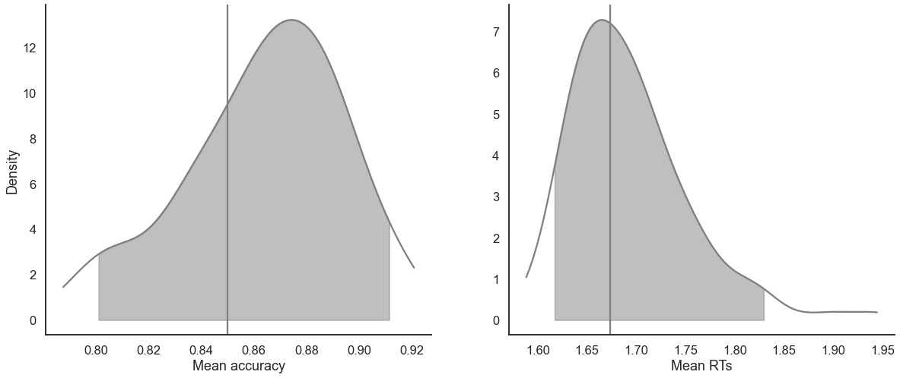

[1]:
import rlssm
import pandas as pd
import os
[2]:
par_path = os.path.abspath(os.path.join(os.getcwd(), os.pardir))
data_path = os.path.join(par_path, 'data/data_experiment.csv')
data = pd.read_csv(data_path, index_col=0)
data = data[data.participant == 10].reset_index(drop=True)
data['block_label'] += 1
data.head()
[2]:
| participant | block_label | trial_block | f_cor | f_inc | cor_option | inc_option | times_seen | rt | accuracy | |
|---|---|---|---|---|---|---|---|---|---|---|
| 0 | 10 | 1.0 | 1.0 | 61.0 | 52.0 | 4 | 3 | 1.0 | 1.285418 | 0.0 |
| 1 | 10 | 1.0 | 2.0 | 54.0 | 37.0 | 4 | 2 | 1.5 | 1.577622 | 0.0 |
| 2 | 10 | 1.0 | 3.0 | 51.0 | 51.0 | 4 | 3 | 2.5 | 1.564731 | 0.0 |
| 3 | 10 | 1.0 | 4.0 | 50.0 | 35.0 | 3 | 1 | 2.0 | 1.217245 | 1.0 |
| 4 | 10 | 1.0 | 5.0 | 59.0 | 50.0 | 4 | 2 | 3.0 | 1.929781 | 0.0 |
[3]:
model = rlssm.LBAModel_2A(1)
Using cached StanModel
[4]:
# sampling parameters
n_iter = 700
n_chains = 2
n_thin = 5
[5]:
model_fit = model.fit(
data,
thin = n_thin,
iter = n_iter,
chains = n_chains)
WARNING:pystan:Maximum (flat) parameter count (1000) exceeded: skipping diagnostic tests for n_eff and Rhat.
To run all diagnostics call pystan.check_hmc_diagnostics(fit)
WARNING:pystan:2 of 140 iterations ended with a divergence (1.43 %).
WARNING:pystan:Try running with adapt_delta larger than 0.8 to remove the divergences.
Checks MCMC diagnostics:
n_eff / iter looks reasonable for all parameters
2.0 of 140 iterations ended with a divergence (1.4285714285714286%)
Try running with larger adapt_delta to remove the divergences
0 of 140 iterations saturated the maximum tree depth of 10 (0.0%)
E-BFMI indicated no pathological behavior
[6]:
model_fit.rhat.describe()
[6]:
| rhat | |
|---|---|
| count | 5.000000 |
| mean | 1.016356 |
| std | 0.008087 |
| min | 1.007710 |
| 25% | 1.009132 |
| 50% | 1.016074 |
| 75% | 1.022996 |
| max | 1.025870 |
[7]:
model_fit.rhat.head()
[7]:
| rhat | variable | |
|---|---|---|
| 0 | 1.025870 | k |
| 1 | 1.009132 | A |
| 2 | 1.016074 | tau |
| 3 | 1.022996 | drift_cor |
| 4 | 1.007710 | drift_inc |
[8]:
model_fit.waic
[8]:
{'lppd': -237.72566174968202,
'p_waic': 3.122236004709617,
'waic': 481.69579550878325,
'waic_se': 28.77144099171388}
Posteriors¶
[9]:
model_fit.samples
[9]:
| chain | draw | transf_k | transf_A | transf_tau | transf_drift_cor | transf_drift_inc | |
|---|---|---|---|---|---|---|---|
| 0 | 0 | 62 | 3.669709 | 0.850096 | 0.096483 | 2.861367 | 1.884172 |
| 1 | 0 | 32 | 4.045519 | 0.944517 | 0.048823 | 2.989458 | 2.166580 |
| 2 | 0 | 7 | 3.340165 | 0.938221 | 0.171876 | 2.866527 | 2.127082 |
| 3 | 0 | 3 | 3.835383 | 0.981928 | 0.102350 | 3.099966 | 2.235176 |
| 4 | 0 | 36 | 3.586005 | 0.924545 | 0.155582 | 3.036587 | 2.115467 |
| ... | ... | ... | ... | ... | ... | ... | ... |
| 135 | 1 | 35 | 3.275540 | 0.517982 | 0.180501 | 2.754708 | 1.812676 |
| 136 | 1 | 49 | 4.462554 | 0.960999 | 0.019331 | 3.241174 | 2.556430 |
| 137 | 1 | 61 | 2.883618 | 1.078033 | 0.210562 | 2.688096 | 1.800621 |
| 138 | 1 | 11 | 4.290410 | 1.087636 | 0.014903 | 3.176732 | 2.458804 |
| 139 | 1 | 67 | 2.773758 | 0.980757 | 0.240683 | 2.566372 | 1.770744 |
140 rows × 7 columns
[10]:
model_fit.trial_samples
[10]:
OrderedDict([('k_t',
array([[3.66970874, 3.66970874, 3.66970874, ..., 3.66970874, 3.66970874,
3.66970874],
[4.04551877, 4.04551877, 4.04551877, ..., 4.04551877, 4.04551877,
4.04551877],
[3.34016478, 3.34016478, 3.34016478, ..., 3.34016478, 3.34016478,
3.34016478],
...,
[2.88361814, 2.88361814, 2.88361814, ..., 2.88361814, 2.88361814,
2.88361814],
[4.29040952, 4.29040952, 4.29040952, ..., 4.29040952, 4.29040952,
4.29040952],
[2.77375808, 2.77375808, 2.77375808, ..., 2.77375808, 2.77375808,
2.77375808]])),
('A_t',
array([[0.85009641, 0.85009641, 0.85009641, ..., 0.85009641, 0.85009641,
0.85009641],
[0.94451657, 0.94451657, 0.94451657, ..., 0.94451657, 0.94451657,
0.94451657],
[0.93822107, 0.93822107, 0.93822107, ..., 0.93822107, 0.93822107,
0.93822107],
...,
[1.07803294, 1.07803294, 1.07803294, ..., 1.07803294, 1.07803294,
1.07803294],
[1.0876356 , 1.0876356 , 1.0876356 , ..., 1.0876356 , 1.0876356 ,
1.0876356 ],
[0.98075721, 0.98075721, 0.98075721, ..., 0.98075721, 0.98075721,
0.98075721]])),
('tau_t',
array([[0.09648285, 0.09648285, 0.09648285, ..., 0.09648285, 0.09648285,
0.09648285],
[0.0488231 , 0.0488231 , 0.0488231 , ..., 0.0488231 , 0.0488231 ,
0.0488231 ],
[0.17187563, 0.17187563, 0.17187563, ..., 0.17187563, 0.17187563,
0.17187563],
...,
[0.2105619 , 0.2105619 , 0.2105619 , ..., 0.2105619 , 0.2105619 ,
0.2105619 ],
[0.01490342, 0.01490342, 0.01490342, ..., 0.01490342, 0.01490342,
0.01490342],
[0.24068309, 0.24068309, 0.24068309, ..., 0.24068309, 0.24068309,
0.24068309]])),
('drift_cor_t',
array([[2.8613671 , 2.8613671 , 2.8613671 , ..., 2.8613671 , 2.8613671 ,
2.8613671 ],
[2.98945806, 2.98945806, 2.98945806, ..., 2.98945806, 2.98945806,
2.98945806],
[2.86652694, 2.86652694, 2.86652694, ..., 2.86652694, 2.86652694,
2.86652694],
...,
[2.68809619, 2.68809619, 2.68809619, ..., 2.68809619, 2.68809619,
2.68809619],
[3.17673184, 3.17673184, 3.17673184, ..., 3.17673184, 3.17673184,
3.17673184],
[2.56637204, 2.56637204, 2.56637204, ..., 2.56637204, 2.56637204,
2.56637204]])),
('drift_inc_t',
array([[1.88417197, 1.88417197, 1.88417197, ..., 1.88417197, 1.88417197,
1.88417197],
[2.16658044, 2.16658044, 2.16658044, ..., 2.16658044, 2.16658044,
2.16658044],
[2.12708167, 2.12708167, 2.12708167, ..., 2.12708167, 2.12708167,
2.12708167],
...,
[1.8006208 , 1.8006208 , 1.8006208 , ..., 1.8006208 , 1.8006208 ,
1.8006208 ],
[2.45880368, 2.45880368, 2.45880368, ..., 2.45880368, 2.45880368,
2.45880368],
[1.77074447, 1.77074447, 1.77074447, ..., 1.77074447, 1.77074447,
1.77074447]]))])
[11]:
model_fit.plot_posteriors(height=5, show_intervals='HDI');

[12]:
pp_rt, pp_acc = model_fit.get_posterior_predictives(n_posterior_predictives=100)
[13]:
pp_rt
[13]:
array([[1.67227333, 1.19625618, 1.35499495, ..., 1.61226654, 1.28342245,
2.87107757],
[2.24189042, 1.14633505, 1.77567165, ..., 2.06433049, 1.28386355,
1.24660241],
[1.46399255, 2.30636745, 1.27645439, ..., 1.59058809, 1.43104255,
1.7892862 ],
...,
[1.17668837, 1.27226256, 1.04485603, ..., 1.40904885, 2.16827302,
1.63109905],
[1.12300287, 1.49991923, 1.54671045, ..., 1.3211988 , 2.04345841,
1.0473686 ],
[1.50107356, 3.18078481, 2.57910438, ..., 1.5625403 , 1.51545854,
1.28611096]])
[14]:
pp_acc
[14]:
array([[1., 0., 1., ..., 1., 0., 0.],
[1., 1., 0., ..., 1., 1., 1.],
[1., 1., 1., ..., 1., 1., 1.],
...,
[1., 1., 1., ..., 1., 1., 1.],
[1., 1., 1., ..., 1., 1., 1.],
[1., 1., 0., ..., 0., 1., 1.]])
[15]:
pp_summary = model_fit.get_posterior_predictives_summary(n_posterior_predictives=100)
pp_summary
[15]:
| mean_accuracy | mean_rt | skewness | quant_10_rt_incorrect | quant_30_rt_incorrect | quant_50_rt_incorrect | quant_70_rt_incorrect | quant_90_rt_incorrect | quant_10_rt_correct | quant_30_rt_correct | quant_50_rt_correct | quant_70_rt_correct | quant_90_rt_correct | |
|---|---|---|---|---|---|---|---|---|---|---|---|---|---|
| sample | |||||||||||||
| 1 | 0.799163 | 1.614504 | 13.487908 | 1.157773 | 1.423071 | 1.579926 | 1.788719 | 2.137493 | 1.050592 | 1.238341 | 1.430955 | 1.595490 | 2.004905 |
| 2 | 0.698745 | 1.577363 | 2.343839 | 1.168040 | 1.407806 | 1.604730 | 1.865734 | 2.347868 | 1.033369 | 1.204606 | 1.404072 | 1.672573 | 2.046526 |
| 3 | 0.686192 | 1.457550 | 1.703131 | 1.173095 | 1.290601 | 1.454276 | 1.637265 | 1.932010 | 1.011161 | 1.173164 | 1.331002 | 1.539179 | 1.962778 |
| 4 | 0.761506 | 1.518276 | 2.902984 | 1.108983 | 1.333951 | 1.482438 | 1.695597 | 2.171418 | 1.016300 | 1.239588 | 1.375935 | 1.594626 | 1.984548 |
| 5 | 0.765690 | 1.482258 | 6.343259 | 1.166214 | 1.325327 | 1.469179 | 1.598495 | 2.083771 | 1.020502 | 1.223105 | 1.383049 | 1.554726 | 1.824439 |
| ... | ... | ... | ... | ... | ... | ... | ... | ... | ... | ... | ... | ... | ... |
| 96 | 0.815900 | 1.434669 | 1.525270 | 1.088204 | 1.269907 | 1.417493 | 1.618231 | 1.990304 | 1.044163 | 1.223703 | 1.358508 | 1.522673 | 1.831072 |
| 97 | 0.711297 | 1.505379 | 1.400357 | 1.165943 | 1.382046 | 1.510394 | 1.732830 | 2.244687 | 1.040893 | 1.188039 | 1.322435 | 1.609117 | 2.043672 |
| 98 | 0.799163 | 1.443413 | 1.146682 | 1.086934 | 1.303866 | 1.514028 | 1.671234 | 2.114590 | 0.972940 | 1.184710 | 1.325524 | 1.520235 | 1.950058 |
| 99 | 0.811715 | 1.421765 | 1.901745 | 1.169847 | 1.344220 | 1.498226 | 1.695812 | 1.974793 | 0.996752 | 1.155994 | 1.307926 | 1.486360 | 1.962106 |
| 100 | 0.757322 | 1.571454 | 3.782224 | 1.274544 | 1.445424 | 1.642612 | 1.895757 | 2.418593 | 0.992500 | 1.235976 | 1.406830 | 1.652972 | 2.039081 |
100 rows × 13 columns
[16]:
model_fit.plot_mean_posterior_predictives(n_posterior_predictives=100, figsize=(20,8), show_intervals='HDI');

[17]:
model_fit.plot_quantiles_posterior_predictives(n_posterior_predictives=100, kind='shades');

[18]:
import numpy as np
[19]:
data['choice_pair'] = 'AB'
data.loc[(data.cor_option == 3) & (data.inc_option == 1), 'choice_pair'] = 'AC'
data.loc[(data.cor_option == 4) & (data.inc_option == 2), 'choice_pair'] = 'BD'
data.loc[(data.cor_option == 4) & (data.inc_option == 3), 'choice_pair'] = 'CD'
data['block_bins'] = pd.cut(data.trial_block, 8, labels=np.arange(1, 9))
[20]:
data.head()
[20]:
| index | participant | block_label | trial_block | f_cor | f_inc | cor_option | inc_option | times_seen | rt | accuracy | accuracy_rescale | choice_pair | block_bins | |
|---|---|---|---|---|---|---|---|---|---|---|---|---|---|---|
| 0 | 0 | 10 | 1.0 | 1.0 | 61.0 | 52.0 | 4 | 3 | 1.0 | 1.285418 | 0.0 | 2 | CD | 1 |
| 1 | 1 | 10 | 1.0 | 2.0 | 54.0 | 37.0 | 4 | 2 | 1.5 | 1.577622 | 0.0 | 2 | BD | 1 |
| 2 | 2 | 10 | 1.0 | 3.0 | 51.0 | 51.0 | 4 | 3 | 2.5 | 1.564731 | 0.0 | 2 | CD | 1 |
| 3 | 3 | 10 | 1.0 | 4.0 | 50.0 | 35.0 | 3 | 1 | 2.0 | 1.217245 | 1.0 | 1 | AC | 1 |
| 4 | 4 | 10 | 1.0 | 5.0 | 59.0 | 50.0 | 4 | 2 | 3.0 | 1.929781 | 0.0 | 2 | BD | 1 |
[21]:
model_fit.get_grouped_posterior_predictives_summary(
grouping_vars=['block_label', 'choice_pair'],
quantiles=[.3, .5, .7],
n_posterior_predictives=100)
[21]:
| mean_accuracy | mean_rt | skewness | quant_30_rt_incorrect | quant_30_rt_correct | quant_50_rt_incorrect | quant_50_rt_correct | quant_70_rt_incorrect | quant_70_rt_correct | |||
|---|---|---|---|---|---|---|---|---|---|---|---|
| block_label | choice_pair | sample | |||||||||
| 1.0 | AB | 1 | 0.75 | 1.480688 | 2.502428 | 1.024518 | 1.337262 | 1.176697 | 1.429384 | 1.184811 | 1.632312 |
| 2 | 0.75 | 1.494594 | 0.638907 | 1.276671 | 1.304920 | 1.368122 | 1.462239 | 1.592027 | 1.717485 | ||
| 3 | 0.70 | 1.469694 | 0.803160 | 1.377936 | 1.306803 | 1.607192 | 1.426029 | 1.739389 | 1.511035 | ||
| 4 | 0.75 | 1.599615 | 0.447825 | 1.635178 | 1.299746 | 1.663089 | 1.517293 | 1.767739 | 1.702939 | ||
| 5 | 0.60 | 1.376990 | 0.803442 | 1.278217 | 1.263027 | 1.376664 | 1.332366 | 1.481102 | 1.425297 | ||
| ... | ... | ... | ... | ... | ... | ... | ... | ... | ... | ... | ... |
| 3.0 | CD | 96 | 0.85 | 1.565873 | 1.915931 | 1.406052 | 1.148709 | 1.572862 | 1.521186 | 1.668317 | 1.684704 |
| 97 | 0.65 | 1.527317 | 0.883126 | 1.350817 | 1.273823 | 1.860067 | 1.364047 | 2.148044 | 1.472886 | ||
| 98 | 0.65 | 1.589911 | 2.299556 | 1.215366 | 1.275721 | 1.510554 | 1.483562 | 1.572747 | 1.718701 | ||
| 99 | 0.85 | 1.309896 | 0.937661 | 1.121466 | 1.139482 | 1.217709 | 1.296632 | 1.262999 | 1.478310 | ||
| 100 | 0.80 | 1.585306 | 1.786769 | 1.063191 | 1.419828 | 1.335941 | 1.494361 | 1.758357 | 1.715775 |
1200 rows × 9 columns
[22]:
model_fit.get_grouped_posterior_predictives_summary(
grouping_vars=['block_bins'],
quantiles=[.3, .5, .7],
n_posterior_predictives=100)
[22]:
| mean_accuracy | mean_rt | skewness | quant_30_rt_incorrect | quant_30_rt_correct | quant_50_rt_incorrect | quant_50_rt_correct | quant_70_rt_incorrect | quant_70_rt_correct | ||
|---|---|---|---|---|---|---|---|---|---|---|
| block_bins | sample | |||||||||
| 1 | 1 | 0.666667 | 1.822421 | 2.194476 | 1.374931 | 1.336806 | 1.552943 | 1.489791 | 2.269784 | 1.673727 |
| 2 | 0.633333 | 1.538414 | 0.259050 | 1.501086 | 1.251568 | 1.625164 | 1.408985 | 1.884665 | 1.646852 | |
| 3 | 0.600000 | 1.514489 | 1.466880 | 1.433615 | 1.269109 | 1.600592 | 1.371785 | 1.817720 | 1.472953 | |
| 4 | 0.666667 | 1.426424 | 0.583451 | 1.353432 | 1.178183 | 1.560177 | 1.254533 | 1.617040 | 1.528058 | |
| 5 | 0.733333 | 1.555820 | 0.799654 | 1.539074 | 1.243777 | 1.633894 | 1.405582 | 1.925176 | 1.623275 | |
| ... | ... | ... | ... | ... | ... | ... | ... | ... | ... | ... |
| 8 | 96 | 0.586207 | 1.497093 | 0.168614 | 1.219660 | 1.305840 | 1.347734 | 1.520579 | 1.687630 | 1.728446 |
| 97 | 0.689655 | 1.502492 | 4.012677 | 1.518617 | 1.147707 | 1.617530 | 1.249135 | 1.776427 | 1.352476 | |
| 98 | 0.827586 | 1.349401 | 1.762134 | 1.207493 | 1.164657 | 1.241302 | 1.228657 | 1.507990 | 1.291924 | |
| 99 | 0.793103 | 1.401210 | 0.988129 | 1.339981 | 1.155294 | 1.434166 | 1.321854 | 1.524493 | 1.462061 | |
| 100 | 0.655172 | 1.467377 | 2.354579 | 1.367404 | 1.240671 | 1.390406 | 1.330173 | 1.528429 | 1.421323 |
800 rows × 9 columns
[23]:
model_fit.plot_mean_grouped_posterior_predictives(grouping_vars=['block_bins'],
n_posterior_predictives=100,
figsize=(20,8));

[24]:
model_fit.plot_quantiles_grouped_posterior_predictives(
n_posterior_predictives=100,
grouping_var='choice_pair',
kind='shades',
quantiles=[.1, .3, .5, .7, .9]);

[25]:
sv = model_fit.last_values
sv
[25]:
| chain | draw | warmup | A | drift_cor | drift_inc | k | tau | |
|---|---|---|---|---|---|---|---|---|
| 69 | 0 | 69 | 0 | 0.730618 | 3.406830 | 2.368292 | 4.27831 | -2.573289 |
| 139 | 1 | 69 | 0 | 0.349217 | 3.515723 | 2.628843 | 4.76474 | -4.380532 |
[ ]: